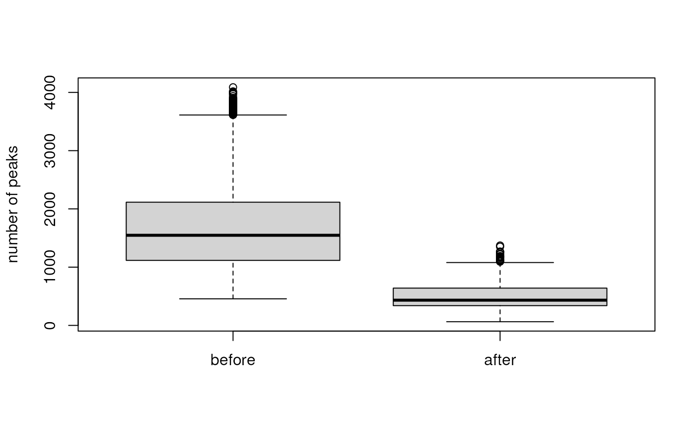

Spectra: an expandable infrastructure to handle mass spectrometry data
Johannes Rainer1, Sebastian Gibb2, Laurent Gatto3
Source:vignettes/Spectra-backends.Rmd
Spectra-backends.RmdLast modified: 2023-12-05 09:09:17.874995
Compiled: Tue Dec 5 09:13:59 2023
Abstract
Mass spectrometry (MS) data is a key technology in modern metabolomics and proteomics experiments. Continuous improvements in MS instrumentation, larger experiments and new technological developments lead to ever growing data sizes and increased number of available variables making standard in-memory data handling and processing difficult.
The Spectra
package provides a modern infrastructure for MS data handling
specifically designed to enable extension to additional data resources
or alternative data representations. These can be realized by extending
the virtual MsBackend class and its related methods.
Implementations of such MsBackend classes can be tailored
for specific needs, such as low memory footprint, fast processing,
remote data access, or also support for specific additional data types
or variables. Importantly, data processing of Spectra
objects is independent of the backend in use due to a lazy evaluation
mechanism that caches data manipulations internally.
This workshop discusses different available data representations for
MS data along with their properties, advantages and performances. In
addition, Spectra’s concept of lazy evaluation for data
manipulations is presented, as well as a simple caching mechanism for
data modifications. Finally, it explains how new MsBackend
instances can be implemented and tested to ensure compliance.
Introduction
This workshop/tutorial assumes that readers are familiar with mass spectrometry data. See the LC-MS/MS in a nutshell section of the Seamless Integration of Mass Spectrometry Data from Different Sources vignette in this package for a general introduction to MS.
Pre-requisites
- Basic familiarity with R and Bioconductor.
- Basic understanding of Mass Spectrometry (MS) data.
Installation
Get the docker image of this tutorial with
docker pull jorainer/spectra_tutorials:latest.-
Start docker using
docker run \ -e PASSWORD=bioc \ -p 8787:8787 \ jorainer/spectra_tutorials:latest Enter
http://localhost:8787in a web browser and log in with usernamerstudioand passwordbioc.Open this R-markdown file (vignettes/Spectra-backends.Rmd) in the RStudio server version in the web browser and evaluate the R code blocks.
Workshop goals and objectives
This is a technical demonstration of the internals of the Spectra package and the design of its MS infrastructure. We’re not demonstrating any use cases or analysis workflows here.
Workshop
The Spectra package
- Purpose: provide an expandable, well tested and user-friendly infrastructure for mass spectrometry (MS) data.
- Design: separation of code representing the main user interface and code to provide, store and read MS data.
-
Spectra: main interface for the end user. -
MsBackend: defines how and where data is stored and how it is managed. -
Why?:
- the user does not need to care about where or how the data is stored.
- the same functionality can be applied to MS data, regardless of where and how the data is stored.
- enables specialized data storage/representation options: remote data, low memory footprint, high performance.
Creating and using Spectra objects
MS data consists of duplets of mass-to-charge (m/z) and
intensity values along with potential additional information, such as
the MS level, retention time, polarity etc. In its simplest form, MS
data consists thus of two (aligned) numeric vectors with the
m/z and intensity values and an e.g. data.frame
containing potential additional annotations for a MS spectrum. In
Spectra terminology, "mz" and
"intensity" are called peak variables (because
they provide information on individual mass peaks), and all other
annotations spectra variables (usually being a single value per
spectrum).
Below we define m/z and intensity values for a mass spectrum
as well as a data.frame with additional spectra
variables.
#' Define simple MS data
mz <- c(56.0494, 69.0447, 83.0603, 109.0395, 110.0712,
111.0551, 123.0429, 138.0662, 195.0876)
int <- c(0.459, 2.585, 2.446, 0.508, 8.968, 0.524, 0.974, 100.0, 40.994)
sv <- data.frame(msLevel = 1L, polarity = 1L)This would be a basic representation of MS data in R. For obvious
reasons it is however better to store such data in a single
container than keeping it in separate, unrelated, variables. We
thus create below a Spectra object from this MS data.
Spectra objects can be created with the
Spectra constructor function that accepts (among other
possibilities) a data.frame with the full MS data as input.
Each row in that data.frame is expected to contain data
from one spectrum. We therefore need to add the m/z and
intensity values as a list of numerical vectors to our data
frame.
library(Spectra)
#' wrap m/z and intensities into a list and add them to the data.frame
sv$mz <- list(mz)
sv$intensity <- list(int)
#' Create a `Spectra` object from the data.
s <- Spectra(sv)
s## MSn data (Spectra) with 1 spectra in a MsBackendMemory backend:
## msLevel rtime scanIndex
## <integer> <numeric> <integer>
## 1 1 NA NA
## ... 16 more variables/columns.We have now created a Spectra object representing our
toy MS data. Individual spectra variables can be accessed with either
$ and the name of the spectra variable, or with one of the
dedicated accessor functions.
#' Access the MS level spectra variable
s$msLevel## [1] 1
msLevel(s)## [1] 1Also, while we provided only the spectra variables
"msLevel" and "polarity" with out input data
frame, more variables are available by default for a
Spectra object. These are called core spectra
variables and they can always be extracted from a
Spectra object, even if they are not defined (in which case
missing values are returned). Spectra variables available from a
Spectra object can be listed with the
spectraVariables function:
#' List all available spectra variables
spectraVariables(s)## [1] "msLevel" "rtime"
## [3] "acquisitionNum" "scanIndex"
## [5] "dataStorage" "dataOrigin"
## [7] "centroided" "smoothed"
## [9] "polarity" "precScanNum"
## [11] "precursorMz" "precursorIntensity"
## [13] "precursorCharge" "collisionEnergy"
## [15] "isolationWindowLowerMz" "isolationWindowTargetMz"
## [17] "isolationWindowUpperMz"
#' Extract the retention time spectra variable
s$rtime## [1] NAWe’ve now got a Spectra object representing a single MS
spectrum - but, as the name of the class implies, it is actually
designed to represent data from multiple mass spectra (possibly from a
whole experiment). Below we thus define again a data.frame,
this time with 3 rows, and create a Spectra object from
that. Also, we define some additional spectra variables providing the
name and ID of the compounds the MS2 (fragment) spectrum represents.
#' Define spectra variables for 3 MS spectra.
sv <- data.frame(
msLevel = c(2L, 2L, 2L),
polarity = c(1L, 1L, 1L),
id = c("HMDB0000001", "HMDB0000001", "HMDB0001847"),
name = c("1-Methylhistidine", "1-Methylhistidine", "Caffeine"))
#' Assign m/z and intensity values.
sv$mz <- list(
c(109.2, 124.2, 124.5, 170.16, 170.52),
c(83.1, 96.12, 97.14, 109.14, 124.08, 125.1, 170.16),
c(56.0494, 69.0447, 83.0603, 109.0395, 110.0712,
111.0551, 123.0429, 138.0662, 195.0876))
sv$intensity <- list(
c(3.407, 47.494, 3.094, 100.0, 13.240),
c(6.685, 4.381, 3.022, 16.708, 100.0, 4.565, 40.643),
c(0.459, 2.585, 2.446, 0.508, 8.968, 0.524, 0.974, 100.0, 40.994))
#' Create a Spectra from this data.
s <- Spectra(sv)
s## MSn data (Spectra) with 3 spectra in a MsBackendMemory backend:
## msLevel rtime scanIndex
## <integer> <numeric> <integer>
## 1 2 NA NA
## 2 2 NA NA
## 3 2 NA NA
## ... 18 more variables/columns.Now we have a Spectra object representing 3 mass spectra
and a set of spectra and peak variables.
#' List available spectra and peaks variables.
spectraVariables(s)## [1] "msLevel" "rtime"
## [3] "acquisitionNum" "scanIndex"
## [5] "dataStorage" "dataOrigin"
## [7] "centroided" "smoothed"
## [9] "polarity" "precScanNum"
## [11] "precursorMz" "precursorIntensity"
## [13] "precursorCharge" "collisionEnergy"
## [15] "isolationWindowLowerMz" "isolationWindowTargetMz"
## [17] "isolationWindowUpperMz" "id"
## [19] "name"## [1] "mz" "intensity"Spectra are organized linearly, i.e., one after the other. Thus, our
Spectra has a length of 3 with each element being one
spectrum. Subsetting works as for any other R object:
length(s)## [1] 3
#' Extract the 2nd spectrum
s[2]## MSn data (Spectra) with 1 spectra in a MsBackendMemory backend:
## msLevel rtime scanIndex
## <integer> <numeric> <integer>
## 1 2 NA NA
## ... 18 more variables/columns.A Spectra behaves similar to a
data.frame with elements (rows) being individual
spectra and columns being the spectra (or peaks) variables,
that can be accessed with the $ operator.
s$msLevel## [1] 2 2 2Similar to a data.frame we can also add new spectra
variables (columns) using $<-.
#' Add a new spectra variable.
s$new_variable <- c("a", "b", "c")
spectraVariables(s)## [1] "msLevel" "rtime"
## [3] "acquisitionNum" "scanIndex"
## [5] "dataStorage" "dataOrigin"
## [7] "centroided" "smoothed"
## [9] "polarity" "precScanNum"
## [11] "precursorMz" "precursorIntensity"
## [13] "precursorCharge" "collisionEnergy"
## [15] "isolationWindowLowerMz" "isolationWindowTargetMz"
## [17] "isolationWindowUpperMz" "id"
## [19] "name" "new_variable"The full peak data can be extracted with the peaksData
function, that returns a list of two-dimensional arrays
with the values of the peak variables. Each list element represents the
peak data from one spectrum, which is stored in a
e.g. matrix with columns being the peak variables and rows
the respective values for each peak. The number of rows of such peak
variable arrays depends on the number of mass peaks of each spectrum.
This number can be extracted using lengths:
#' Get the number of peaks per spectrum.
lengths(s)## [1] 5 7 9We next extract the peaks’ data of our Spectra and
subset that to data from the second spectrum.
#' Extract the peaks matrix of the second spectrum
peaksData(s)[[2]]## mz intensity
## [1,] 83.10 6.685
## [2,] 96.12 4.381
## [3,] 97.14 3.022
## [4,] 109.14 16.708
## [5,] 124.08 100.000
## [6,] 125.10 4.565
## [7,] 170.16 40.643Finally, we can also visualize the peak data of a spectrum in the
Spectra.
#' Plot the second spectrum.
plotSpectra(s[2])Such plots could also be created manually from the m/z and intensity values, but built-in functions are in most cases more efficient.
Experimental MS data is generally (ideally) stored in files in mzML,
mzXML or CDF format. These are open file formats that can be read by
most software. In Bioconductor, the mzR package
allows to read/write data in/to these formats. Also Spectra
allows to represent data from such raw data files. To illustrate this we
below create a Spectra object for from two mzML files that
are provided in Bioconductor’s msdata
package.
#' Import MS data from 2 mzML files.
fls <- dir(system.file("sciex", package = "msdata"), full.names = TRUE)
s2 <- Spectra(fls, source = MsBackendMzR())
s2## MSn data (Spectra) with 1862 spectra in a MsBackendMzR backend:
## msLevel rtime scanIndex
## <integer> <numeric> <integer>
## 1 1 0.280 1
## 2 1 0.559 2
## 3 1 0.838 3
## 4 1 1.117 4
## 5 1 1.396 5
## ... ... ... ...
## 1858 1 258.636 927
## 1859 1 258.915 928
## 1860 1 259.194 929
## 1861 1 259.473 930
## 1862 1 259.752 931
## ... 33 more variables/columns.
##
## file(s):
## 20171016_POOL_POS_1_105-134.mzML
## 20171016_POOL_POS_3_105-134.mzMLWe have thus access to the raw experimental MS data through this
Spectra object. In contrast to the first example above, we
used here the Spectra constructor providing a
character vector with the file names and specified
source = MsBackendMzR(). This anticipates the concept of
backends in the Spectra package: the source
parameter of the Spectra call defines the backend to use to
import (or represent) the data, which is in our example the
MsBackendMzR that enables import of data from mzML
files.
Like in our first example, we can again subset the object or access
any of its spectra variables. Note however that in this
Spectra object we have many more spectra variables
available (depending on what is provided by the raw data files).
#' Available spectra variables
spectraVariables(s2)## [1] "msLevel" "rtime"
## [3] "acquisitionNum" "scanIndex"
## [5] "dataStorage" "dataOrigin"
## [7] "centroided" "smoothed"
## [9] "polarity" "precScanNum"
## [11] "precursorMz" "precursorIntensity"
## [13] "precursorCharge" "collisionEnergy"
## [15] "isolationWindowLowerMz" "isolationWindowTargetMz"
## [17] "isolationWindowUpperMz" "peaksCount"
## [19] "totIonCurrent" "basePeakMZ"
## [21] "basePeakIntensity" "ionisationEnergy"
## [23] "lowMZ" "highMZ"
## [25] "mergedScan" "mergedResultScanNum"
## [27] "mergedResultStartScanNum" "mergedResultEndScanNum"
## [29] "injectionTime" "filterString"
## [31] "spectrumId" "ionMobilityDriftTime"
## [33] "scanWindowLowerLimit" "scanWindowUpperLimit"
#' Access the MS levels for the first 6 spectra
s2$msLevel |> head()## [1] 1 1 1 1 1 1And we can again visualize the data.
#' Plot the 4th spectrum.
plotSpectra(s2[4])Use of different backends with Spectra, why
and how?
While both Spectra objects behave the same way,
i.e. all data can be accessed in the same fashion, they actually use
different backends and thus data representations:
class(s@backend)## [1] "MsBackendMemory"
## attr(,"package")
## [1] "Spectra"
class(s2@backend)## [1] "MsBackendMzR"
## attr(,"package")
## [1] "Spectra"Our first example Spectra uses a
MsBackendMemory backend that, as the name tells, keeps all
MS data in memory (within the backend object). In contrast, the second
Spectra which represents the experimental MS data from the
two mzML files uses the MsBackendMzR backend. This backend
loads only general spectra data (variables) into memory while it imports
the peak data only on-demand from the original data files when
needed/requested (similar to the on-disk mode discussed in
(Gatto, Gibb, and Rainer 2020)). The
advantage of this offline storage mode is a lower memory
footprint that enables also the analysis of large data experiments on
standard computers.
Why different backends?
Reason 1: support for additional file formats. The
backend class defines the functionality to import/export data from/to
specific file formats. The Spectra class stays data
storage agnostic and e.g. no import/export routines need to be
implemented for that class. Support for additional file formats can be
implemented independently of the Spectra package and can be
contributed by different developers.
Examples:
-
MsBackendMgf(defined in MsBackendMgf) adds support for MS files in MGF file format. -
MsBackendMsp(defined in MsBackendMsp adds support for MSP files. -
MsBackendRawFileReader(defined in MsBackendRawFileReader) adds support for MS data files in Thermo Fisher Scientific’s raw data file format.
To import data from files of a certain file format, the respective
backend able to handle such data needs to be specified with the
parameter source in the Spectra constructor
call:
#' Import MS data from mzML files
s_mzr <- Spectra(fls, source = MsBackendMzR())Reason 2: support different implementations to store or represent the data. This includes both where the data is stored or how it is stored. Specialized backends can be defined that are, for example, optimized for high performance or for low memory demand.
Examples:
-
MsBackendMemory(defined in Spectra): keeps all the MS data in memory and is optimized for a fast and efficient access to the peaks data matrices (i.e., the m/z and intensity values of the spectra). -
MsBackendMzR(defined in Spectra): keeps only spectra variables in memory and retrieves the peaks data on-the-fly from the original data files upon request. This guarantees a lower memory footprint and enables also analysis of large MS experiments. -
MsBackendSql(defined in the MsBackendSql package): all MS data is stored in a SQL database. Has minimal memory requirements but any data (whether spectra or peaks variables) need to be retrieved from the database. Depending on the SQL database system used, this backend would also allow remote data access.
To evaluate and illustrate the properties of these different backends
we create below Spectra objects for the same data, but
using different backends. We use the setBackend function to
change the backend for a Spectra object.
#' Change the backend to MsBackendMemory
s_mem <- setBackend(s_mzr, MsBackendMemory())With the call above we loaded all MS data from the original data
files into memory. As a third option we next store the full MS data into
a SQL database by using/changing to a MsBackendOfflineSql
backend defined by the MsBackendSql
package.
For the setBackend call we need to provide the
connection information for the database that should contain the data.
This includes the database driver (parameter drv, depending
on the database system), the database name (parameter
dbname) as well as eventual additional connection
information like the host, username, port or password. Which of these
parameters are required depends on the SQL database used and hence the
driver (see also ?dbConnect for more information on the
parameters). In our example we will store the data in a SQLite database.
We thus set drv = SQLite() and provide with parameter
dbname the name of the SQLite database file (that should
not yet exist). In addition, importantly, we disable parallel processing
with BPPARAM = SerialParam() since most SQL databases don’t
support parallel data import.
#' Change the backend to a SQL representation of the data.
library(MsBackendSql)
library(RSQLite)
s_db <- setBackend(s_mzr, MsBackendOfflineSql(), drv = SQLite(),
dbname = "ms_backend_sql_test.sqlite",
BPPARAM = SerialParam())Note: a more efficient way to import MS data from data files
into a SQL database is the createMsBackendSqlDatabase from
the MsBackendSql package. Also, for larger data sets it is
suggested to use more advanced and powerful SQL database systems
(e.g. MySQL/MariaDB SQL databases).
We have now 3 Spectra objects representing the same MS
data, but using different backends. As a first comparison we evaluate
their size in memory:
#' Compare memory footprint.
print(object.size(s_mem), units = "MB")## 53.2 Mb
print(object.size(s_mzr), units = "MB")## 0.4 Mb
print(object.size(s_db), units = "MB")## 0.1 MbAs expected, the size of the Spectra object with the
MsBackendMemory backend is the largest of the three. Since
the MsBackendOfflineSql backend keeps only the primary keys
of the spectra in memory it’s memory requirements are particularly small
and is thus ideal to represent even very large MS experiments.
We next evaluate the performance to extract spectra variables. We
compare the time needed to extract the retention times from the 3
Spectra objects using the microbenchmark
function. With register(SerialParam()) we globally disable
parallel processing for Spectra to ensure the results to be
independent that.
#' Compare performance to extract the retention times.
register(SerialParam())
library(microbenchmark)
microbenchmark(
rtime(s_mem),
rtime(s_mzr),
rtime(s_db),
times = 13
)## Unit: microseconds
## expr min lq mean median uq max neval
## rtime(s_mem) 12.292 13.395 19.64815 19.877 26.169 31.269 13
## rtime(s_mzr) 385.288 407.640 451.69762 419.863 445.912 836.380 13
## rtime(s_db) 6983.250 7037.401 8782.54131 7179.236 7268.913 27920.037 13Highest performance can be seen for the Spectra object
with the MsBackendMemory backend, followed by the
Spectra object with the MsBackendMzR backend,
while extraction of spectra variables is slowest for the
Spectra with the MsBackendOfflineSql. Again,
this is expected because the MsBackendOfflineSql needs to
retrieve the data from the database while the two other backends keep
the retention times of the spectra (along with other general spectra
metadata) in memory.
We next also evaluate the performance to extract peaks data, i.e. the individual m/z and intensity values for all spectra in the two files.
#' Compare performance to extract the peaks data.
microbenchmark(
peaksData(s_mem),
peaksData(s_mzr),
peaksData(s_db),
times = 7
)## Unit: microseconds
## expr min lq mean median uq
## peaksData(s_mem) 380.319 485.0095 704.9917 780.716 806.9495
## peaksData(s_mzr) 487238.872 492587.2645 524201.2064 496422.977 500894.0630
## peaksData(s_db) 89571.778 97788.3475 185583.6216 102420.344 210867.2850
## max neval
## 1189.989 7
## 698783.941 7
## 489781.964 7The MsBackendMemory outperforms the two other backends
also in this comparison. Both the MsBackendMzR and
MsBackendOfflineSql need to import this data, the
MsBackendMzR from the original mzML files and the
MsBackendOfflineSql from the SQL database (which for the
present data is more efficient).
At last we evaluate the performance to subset any of the 3
Spectra objects to 10 random spectra.
#' Compare performance to subset the Spectra.
idx <- sample(seq_along(s_mem), 10)
microbenchmark(
s_mem[idx],
s_mzr[idx],
s_db[idx]
)## Unit: microseconds
## expr min lq mean median uq max neval
## s_mem[idx] 230.711 238.1690 246.4851 245.468 251.5495 314.927 100
## s_mzr[idx] 642.047 664.8100 683.6366 676.962 690.1570 1084.352 100
## s_db[idx] 133.279 141.9445 163.7531 147.515 153.4465 1633.125 100Here, the MsBackendOfflineSql has a clear advantage over
the two other backends, because it only needs to subset the integer
vector of primary keys (the only data it keeps in memory), while the
MsBackendMemory needs to subset the full data, and the
MsBackendMzR the data frame with the spectra variables.
Performance considerations and tweaks
Keeping all data in memory (e.g. by using a
MsBackendMemory) has its obvious performance advantages,
but might not be possible for all MS experiments. On-disk
backends such as the MsBackendMzR or
MsBackendOfflineSql allow, due to their lower memory
footprint, to analyze also very large data sets. This is further
optimized by the build-in option for most Spectra methods
to load and process MS data only in small chunks in contrast to loading
and processing the full data as a whole. The performance of the
offline backends MsBackendMzR and
MsBackendSql/MsBackendOfflineSql depend also
on the I/O capabilities of the hard disks containing the data files and,
for the latter, in addition on the configuration of the SQL database
system used.
Data manipulation and the lazy evaluation queue
Not all data representations might, by design or because of the way
the data is handled and stored, allow changing existing or adding new
values. The MsBackendMzR backend for example retrieves the
peaks data directly from the raw data files and we don’t want any
manipulation of m/z or intensity values to be directly written
back to these original data files. Also other backends, specifically
those that provide access to spectral reference databases (such as the
MsBackendMassbankSql from the MsBackendMassbank
package or the MsBackendCompDb from the CompoundDb
package), are not supposed to allow any changes to the information
stored in these databases.
Data manipulations are however an integral part of any data analysis
and we thus need for such backends some mechanism that allows changes to
data without propagating these to the original data resource. For some
backend classes a caching mechanism is implemented that enables
adding, changing, or deleting spectra variables. To illustrate this we
below add a new spectra variable "new_variable" to each of
our 3 Spectra objects.
#' Assign new spectra variables.
s_mem$new_variable <- seq_along(s_mem)
s_mzr$new_variable <- seq_along(s_mem)
s_db$new_variable <- seq_along(s_mem)A new spectra variable was now added to each of the 3
Spectra objects:
#' Show spectra variables for one of the Spectra
spectraVariables(s_mzr)## [1] "msLevel" "rtime"
## [3] "acquisitionNum" "scanIndex"
## [5] "dataStorage" "dataOrigin"
## [7] "centroided" "smoothed"
## [9] "polarity" "precScanNum"
## [11] "precursorMz" "precursorIntensity"
## [13] "precursorCharge" "collisionEnergy"
## [15] "isolationWindowLowerMz" "isolationWindowTargetMz"
## [17] "isolationWindowUpperMz" "peaksCount"
## [19] "totIonCurrent" "basePeakMZ"
## [21] "basePeakIntensity" "ionisationEnergy"
## [23] "lowMZ" "highMZ"
## [25] "mergedScan" "mergedResultScanNum"
## [27] "mergedResultStartScanNum" "mergedResultEndScanNum"
## [29] "injectionTime" "filterString"
## [31] "spectrumId" "ionMobilityDriftTime"
## [33] "scanWindowLowerLimit" "scanWindowUpperLimit"
## [35] "new_variable"The MsBackendMemory stores all spectra variables in a
data.frame within the object. The new spectra variable was
thus simply added as a new column to this data.frame.
Warning: NEVER access or manipulate any of the slots of a backend class directly like below as this can easily result in data corruption.
#' Direct access to the backend's data.
s_mem@backend@spectraData |> head()## msLevel rtime acquisitionNum scanIndex dataStorage
## 1 1 0.280 1 1 <memory>
## 2 1 0.559 2 2 <memory>
## 3 1 0.838 3 3 <memory>
## 4 1 1.117 4 4 <memory>
## 5 1 1.396 5 5 <memory>
## 6 1 1.675 6 6 <memory>
## dataOrigin
## 1 /usr/local/lib/R/site-library/msdata/sciex/20171016_POOL_POS_1_105-134.mzML
## 2 /usr/local/lib/R/site-library/msdata/sciex/20171016_POOL_POS_1_105-134.mzML
## 3 /usr/local/lib/R/site-library/msdata/sciex/20171016_POOL_POS_1_105-134.mzML
## 4 /usr/local/lib/R/site-library/msdata/sciex/20171016_POOL_POS_1_105-134.mzML
## 5 /usr/local/lib/R/site-library/msdata/sciex/20171016_POOL_POS_1_105-134.mzML
## 6 /usr/local/lib/R/site-library/msdata/sciex/20171016_POOL_POS_1_105-134.mzML
## centroided smoothed polarity precScanNum precursorMz precursorIntensity
## 1 FALSE NA 1 NA NA NA
## 2 FALSE NA 1 NA NA NA
## 3 FALSE NA 1 NA NA NA
## 4 FALSE NA 1 NA NA NA
## 5 FALSE NA 1 NA NA NA
## 6 FALSE NA 1 NA NA NA
## precursorCharge collisionEnergy isolationWindowLowerMz
## 1 NA NA NA
## 2 NA NA NA
## 3 NA NA NA
## 4 NA NA NA
## 5 NA NA NA
## 6 NA NA NA
## isolationWindowTargetMz isolationWindowUpperMz peaksCount totIonCurrent
## 1 NA NA 578 898185
## 2 NA NA 1529 1037012
## 3 NA NA 1600 1094971
## 4 NA NA 1664 1135015
## 5 NA NA 1417 1106233
## 6 NA NA 1602 1181489
## basePeakMZ basePeakIntensity ionisationEnergy lowMZ highMZ mergedScan
## 1 124.0860 154089 0 105.0435 133.9837 NA
## 2 124.0859 182690 0 105.0275 133.9836 NA
## 3 124.0859 196650 0 105.0376 133.9902 NA
## 4 124.0859 203502 0 105.0376 133.9853 NA
## 5 124.0859 191715 0 105.0347 133.9885 NA
## 6 124.0859 213400 0 105.0420 133.9836 NA
## mergedResultScanNum mergedResultStartScanNum mergedResultEndScanNum
## 1 NA NA NA
## 2 NA NA NA
## 3 NA NA NA
## 4 NA NA NA
## 5 NA NA NA
## 6 NA NA NA
## injectionTime filterString spectrumId
## 1 0 <NA> sample=1 period=1 cycle=1 experiment=1
## 2 0 <NA> sample=1 period=1 cycle=2 experiment=1
## 3 0 <NA> sample=1 period=1 cycle=3 experiment=1
## 4 0 <NA> sample=1 period=1 cycle=4 experiment=1
## 5 0 <NA> sample=1 period=1 cycle=5 experiment=1
## 6 0 <NA> sample=1 period=1 cycle=6 experiment=1
## ionMobilityDriftTime scanWindowLowerLimit scanWindowUpperLimit new_variable
## 1 NA NA NA 1
## 2 NA NA NA 2
## 3 NA NA NA 3
## 4 NA NA NA 4
## 5 NA NA NA 5
## 6 NA NA NA 6Similarly, also the MsBackendMzR stores data for spectra
variables (but not peaks variables!) within a DataFrame
inside the object. Adding a new spectra variable thus also added a new
column to this DataFrame. Note: the use of a
DataFrame instead of a data.frame in
MsBackendMzR explains most of the performance differences
to subset or access spectra variables we’ve seen between this backend
and the MsBackendMemory above.
s_mzr@backend@spectraData## DataFrame with 1862 rows and 26 columns
## scanIndex acquisitionNum msLevel polarity peaksCount totIonCurrent
## <integer> <integer> <integer> <integer> <integer> <numeric>
## 1 1 1 1 1 578 898185
## 2 2 2 1 1 1529 1037012
## 3 3 3 1 1 1600 1094971
## 4 4 4 1 1 1664 1135015
## 5 5 5 1 1 1417 1106233
## ... ... ... ... ... ... ...
## 1858 927 927 1 1 3528 418159
## 1859 928 928 1 1 3662 429930
## 1860 929 929 1 1 3442 413427
## 1861 930 930 1 1 3564 447033
## 1862 931 931 1 1 3517 441025
## rtime basePeakMZ basePeakIntensity ionisationEnergy lowMZ
## <numeric> <numeric> <numeric> <numeric> <numeric>
## 1 0.280 124.086 154089 0 105.043
## 2 0.559 124.086 182690 0 105.028
## 3 0.838 124.086 196650 0 105.038
## 4 1.117 124.086 203502 0 105.038
## 5 1.396 124.086 191715 0 105.035
## ... ... ... ... ... ...
## 1858 258.636 123.090 28544 0 105.008
## 1859 258.915 123.090 29164 0 105.009
## 1860 259.194 123.090 28724 0 105.010
## 1861 259.473 123.091 28743 0 105.012
## 1862 259.752 123.091 27503 0 105.012
## highMZ mergedScan mergedResultScanNum mergedResultStartScanNum
## <numeric> <integer> <integer> <integer>
## 1 133.984 NA NA NA
## 2 133.984 NA NA NA
## 3 133.990 NA NA NA
## 4 133.985 NA NA NA
## 5 133.989 NA NA NA
## ... ... ... ... ...
## 1858 134.000 NA NA NA
## 1859 134.000 NA NA NA
## 1860 134.000 NA NA NA
## 1861 133.998 NA NA NA
## 1862 133.997 NA NA NA
## mergedResultEndScanNum injectionTime filterString spectrumId
## <integer> <numeric> <character> <character>
## 1 NA 0 NA sample=1 period=1 cy..
## 2 NA 0 NA sample=1 period=1 cy..
## 3 NA 0 NA sample=1 period=1 cy..
## 4 NA 0 NA sample=1 period=1 cy..
## 5 NA 0 NA sample=1 period=1 cy..
## ... ... ... ... ...
## 1858 NA 0 NA sample=1 period=1 cy..
## 1859 NA 0 NA sample=1 period=1 cy..
## 1860 NA 0 NA sample=1 period=1 cy..
## 1861 NA 0 NA sample=1 period=1 cy..
## 1862 NA 0 NA sample=1 period=1 cy..
## centroided ionMobilityDriftTime scanWindowLowerLimit scanWindowUpperLimit
## <logical> <numeric> <numeric> <numeric>
## 1 FALSE NA NA NA
## 2 FALSE NA NA NA
## 3 FALSE NA NA NA
## 4 FALSE NA NA NA
## 5 FALSE NA NA NA
## ... ... ... ... ...
## 1858 FALSE NA NA NA
## 1859 FALSE NA NA NA
## 1860 FALSE NA NA NA
## 1861 FALSE NA NA NA
## 1862 FALSE NA NA NA
## dataStorage dataOrigin new_variable
## <character> <character> <integer>
## 1 /usr/local/lib/R/sit.. /usr/local/lib/R/sit.. 1
## 2 /usr/local/lib/R/sit.. /usr/local/lib/R/sit.. 2
## 3 /usr/local/lib/R/sit.. /usr/local/lib/R/sit.. 3
## 4 /usr/local/lib/R/sit.. /usr/local/lib/R/sit.. 4
## 5 /usr/local/lib/R/sit.. /usr/local/lib/R/sit.. 5
## ... ... ... ...
## 1858 /usr/local/lib/R/sit.. /usr/local/lib/R/sit.. 1858
## 1859 /usr/local/lib/R/sit.. /usr/local/lib/R/sit.. 1859
## 1860 /usr/local/lib/R/sit.. /usr/local/lib/R/sit.. 1860
## 1861 /usr/local/lib/R/sit.. /usr/local/lib/R/sit.. 1861
## 1862 /usr/local/lib/R/sit.. /usr/local/lib/R/sit.. 1862The MsBackendOfflineSql implements the support for
changes to spectra variables differently: the object contains a vector
with the available database column names and in addition an (initially
empty) data.frame to cache changes to spectra variables. If
a spectra variable is deleted, only the respective column name is
removed from the character vector with available column names. If a new
spectra variable is added (like in the example above) or if values of an
existing spectra variable are changed, this spectra variable,
respectively its values, are stored (as a new column) in the caching
data frame:
s_db@backend@localData |> head()## new_variable
## 1 1
## 2 2
## 3 3
## 4 4
## 5 5
## 6 6Actually, why do we not want to change the data directly in the
database? It should be fairly simple to add a new column to the database
table or change the values in that. There are actually two reasons to
not do that: firstly we don’t want to change the
raw data that might be stored in the database (e.g. if the
database contains reference MS2 spectra, such as in the case of a
Spectra with MassBank data) and secondly, we want to avoid
the following situation: imagine we create a copy of our
s_db variable and change the retention times in that
variable:
Writing these changes back to the database would also change the
retention time values in the original s_db variable and
that is for obvious reasons not desired.
## [1] 0.280 0.559 0.838 1.117 1.396 1.675## [1] 10.280 10.559 10.838 11.117 11.396 11.675Note that this can also be used for MsBackendOfflineSql
backends to cache spectra variables in memory for faster access.
s_db2 <- s_db
#' Cache an existing spectra variable in memory
s_db2$rtime <- rtime(s_db2)
microbenchmark(
rtime(s_db),
rtime(s_db2),
times = 17
)## Unit: milliseconds
## expr min lq mean median uq max neval
## rtime(s_db) 6.867144 6.935762 7.046637 6.957643 7.034997 8.032556 17
## rtime(s_db2) 2.967924 3.004833 3.158521 3.054445 3.088198 4.590840 17Note: the MsBackendCached class from the
Spectra package provides the internal
data.frame-based caching mechanism described above. The
MsBackendOfflineSql class directly extends this backend and
hence inherits this mechanism and only database-specific additional
functionality needed to be implemented. Thus, any MsBackend
implementation extending the MsBackendCached base class
automatically inherit this caching mechanism and do not need to
implement their own. Examples of backends extending
MsBackendCached are, among others,
MsBackendSql, MsBackendOfflineSql, and
MsBackendMassbankSql.
Analysis of MS data requires, in addition to changing or adding spectra variables also the possibility to manipulate the peaks’ data (i.e. the m/z and intensity values of the individual mass peaks of the spectra). As a simple example we remove below all mass peaks with an intensity below 100 from the data set and compare the number of peaks per spectra before and after that operation.
#' Remove all peaks with an intensity below 100
s_mem <- filterIntensity(s_mem, intensity = 100)
#' Compare the number of peaks before/after
boxplot(list(before = lengths(s_mzr), after = lengths(s_mem)),
ylab = "number of peaks")
This operation did reduce the number of peaks considerably. We repeat this operation now also for the two other backends.
#' Repeast filtering for the two other Spectra objects.
s_mzr <- filterIntensity(s_mzr, intensity = 100)
s_db <- filterIntensity(s_db, intensity = 100)The number of peaks were also reduced for these two backends although they do not keep the peak data in memory and, as discussed before, we do not allow changes to the data file (or the database) containing the original data.
## [1] 433## [1] 433## [1] 433The caching mechanisms described above work well for spectra variables because of their (generally) limited and manageable sizes. MS peaks data (m/z and intensity values of the individual peaks of MS spectra) however represent much larger data volumes preventing to cache and store changes to these directly in-memory, especially for data from large experiments or high resolution instruments.
For that reason, instead of caching changes to the values within the
object, we cache the actual data manipulation operation(s). The function
to modify peaks data, along with all of its parameters, is automatically
added to an internal lazy processing queue within the
Spectra object for each call to one of the
Spectra’s (peaks) data manipulation functions. This
mechanism is implemented directly for the Spectra class and
backends thus do not have to implement their own.
When calling filterIntensity above, the data was
actually not modified, but the function to filter the peaks data was
added to this processig queue. The function along with all possibly
defined parameters was added as a ProcessingStep
object:
#' Show the processing queue.
s_db@processingQueue## [[1]]
## Object of class "ProcessingStep"
## Function: user-provided function
## Arguments:
## o intensity = 100Inf
## o msLevel = 1Again, it is not advisable to directly access any of the internal
slots of a Spectra object! The function could be accessed
with:
#' Access a processing step's function
s_db@processingQueue[[1L]]@FUN## function (x, spectrumMsLevel, intensity = c(0, Inf), msLevel = spectrumMsLevel,
## ...)
## {
## if (!spectrumMsLevel %in% msLevel || !length(x))
## return(x)
## x[which(between(x[, "intensity"], intensity)), , drop = FALSE]
## }
## <bytecode: 0x55a2b582b590>
## <environment: namespace:Spectra>and all of its parameters with:
#' Access the parameters for that function
s_db@processingQueue[[1L]]@ARGS## $intensity
## [1] 100 Inf
##
## $msLevel
## [1] 1Each time peaks data is accessed (like with the
intensity call in the example below), the
Spectra object will first request the raw peaks
data from the backend, check its own processing queue and, if that is
not empty, apply each of the contained cached processing steps to the
peaks data before returning it to the user.
#' Access intensity values and extract those of the 1st spectrum.
intensity(s_db)[[1L]]## [1] 412 412 412 412 412 412 412 412 412 1237
## [11] 412 412 412 412 412 412 412 412 412 412
## [21] 412 412 824 412 412 412 412 412 412 412
## [31] 412 412 412 412 412 412 1237 412 412 412
## [41] 412 412 412 412 412 412 412 412 412 412
## [51] 824 412 412 412 412 412 412 412 824 1649
## [61] 2061 1237 412 412 412 412 412 412 2061 7008
## [71] 17727 22674 23910 12780 6184 3710 2061 1237 412 412
## [81] 412 1662 412 1258 861 854 845 873 842 412
## [91] 860 1307 882 442 12347 55349 132662 154089 115667 76817
## [101] 41233 26904 11577 6155 2650 3966 872 461 461 433
## [111] 412 442 430 461 412 412 412 412 412 426
## [121] 449 412 412 824 412 412 433 412 412 412
## [131] 412 412 1684 412 412 412 1649 1649 2061 1649
## [141] 4947 6184 9482 10718 5359 2886 1649 1649 1237 412
## [151] 412 412 412 412 412 412 412 412 412 412
## [161] 412 412 412 412 412 412 412 412 412 412
## [171] 412 412 412 412 412 412 412 412 412 412
## [181] 412 412 412 412 412 412 412 412 412 412
## [191] 412 412 412 412 824 412 412 412 412 412
## [201] 412 412 412 412 412 412 412 824 412 412
## [211] 412 412 412 412 412 412 412 412 412 412
## [221] 412 824 824 1237 1649 824 412 412 412 412
## [231] 824 412 824 1237 412 412 412 412 412 412
## [241] 412 412 412 412 412 412 412As a nice side effect, if only a subset of the data is accessed, the data manipulations need only to be applied to the requested data subset, and not the full data. This can have a positive impact on overall performance:
#' Compare applying the processing queue to either 10 spectra or the
#' full set of spectra.
microbenchmark(
intensity(s_mem[1:10]),
intensity(s_mem)[1:10],
times = 7)## Unit: milliseconds
## expr min lq mean median uq
## intensity(s_mem[1:10]) 3.542345 3.699177 3.906552 3.882108 3.977156
## intensity(s_mem)[1:10] 99.563948 99.721442 103.931024 100.194454 108.821023
## max neval
## 4.568749 7
## 110.673833 7Next to the number of common peaks data manipulation methods that are
already implemented for Spectra, and that all make use of
this processing queue, there is also the addProcessing
function that allows to apply any user-provided function to the peaks
data (using the same lazy evaluation mechanism). As a simple example we
define below a function that scales all intensities in a
spectrum such that the total intensity sum per spectrum is 1. Functions
for addProcessing are expected to take a peaks array as
input and should again return a peaks array as their result. Note also
that the ... in the function definition below is required,
because internally additional parameters, such as the spectrum’s MS
level, are by default passed along to the function (see also the
addProcessing documentation entry in ?Spectra
for more information and more advanced examples).
#' Define a function that scales intensities
scale_sum <- function(x, ...) {
x[, "intensity"] <- x[, "intensity"] / sum(x[, "intensity"], na.rm = TRUE)
x
}
#' Add this function to the processing queue
s_mem <- addProcessing(s_mem, scale_sum)
s_mzr <- addProcessing(s_mzr, scale_sum)
s_db <- addProcessing(s_db, scale_sum)As a validation we calculate the sum of intensities for the first 6 spectra.
## [1] 1 1 1 1 1 1## [1] 1 1 1 1 1 1## [1] 1 1 1 1 1 1All intensities were thus scaled to a total intensity sum per spectra of 1. Note that, while this is a common operation for MS2 data (fragment spectra), such a scaling function should generally not be used for (quantitative) MS1 data (as in our example here).
Finally, since through this lazy evaluation mechanism we are not
changing actual peaks data, we can also undo data
manipulations. A simple reset call on a
Spectra object will restore the data in the object to its
initial state (in fact it simply clears the processing queue).
## [1] 1547## [1] 898185 1037012 1094971 1135015 1106233 1181489Along with potential chaching mechanisms for spectra variables, this implementation of a lazy-evaluation queue allows to apply also data manipulations to MS data from data resources that would be inherently read-only (such as reference libraries of fragment spectra) and thus enable the analysis of MS data independently of where and how the data is stored.
Implementing your own MsBackend
New backends for
Spectrashould extend theMsBackendclass and implement the methods defined by its infrastructure.Extending other classes, such as the
MsBackendMemoryorMsBackendCachedcan help reducing the number of methods or concepts needed to implement.A detailed example and description is provided in the Creating new
MsBackendclasses vignette - otherwise: open an issue on the Spectra github repo.-
Add the following code to your testthat.R file to ensure compliance with the
MsBackenddefinition:test_suite <- system.file("test_backends", "test_MsBackend", package = "Spectra") #' Assign an instance of the developed `MsBackend` to variable `be`. be <- my_be test_dir(test_suite, stop_on_failure = TRUE)
Final words
- The Spectra
package provides a powerful infrastructure to handle and process MS data
in R:
- designed to support very large data sets.
- easily extendable.
- support for a variety of MS data file formats and data representations.
- caching mechanism and processing queue allow data analysis also of read-only data resources.
Acknowledgments
Thank you to Philippine Louail for fixing typos and suggesting improvements.